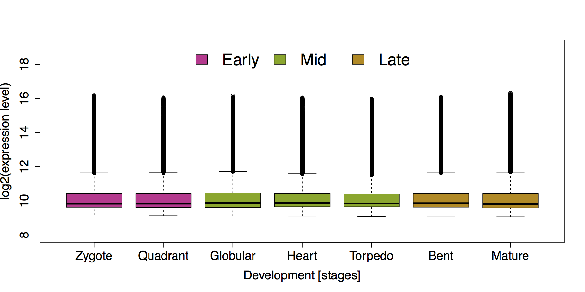
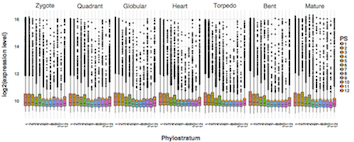
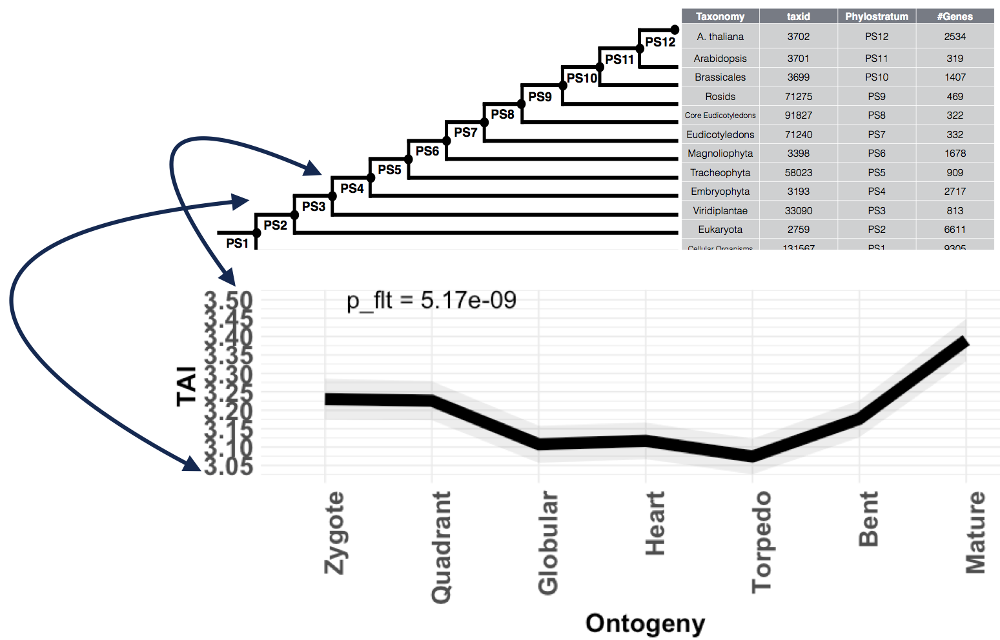

Table of Contents
- Scientific Introduction
- Installation
- Motivation
- Retrieval of phylogenetic or taxonomic information
- Defining input data standards
- Performing a Standard Workflow for Evolutionary Transcriptomics Analyses
Scientific Introduction: Performing Evolutionary Transcriptomics with R
Quantifying transcriptome conservation or
transcriptome diversity patterns within a biological
process of interest allows researchers to extend a classic transcriptome
study by addressing the question why a particular
developmental stage or environmental response timing is organized in the
observed way. This is done by retrieving evolutionary age estimates of
protein coding genes from a variety of gene age inference methods (see
below) and adding this gene age information to the classic gene
expression table. Dedicated transcriptome age quantification procedures
implemented in the myTAI package then allow to capture the
average transcriptome age for each developmental stage or environmental
response stage at hand. Finally, a rigorous statistical assessment of
observed transcriptome age patterns allows researchers to gain greater
confidence in the robustness of observed patterns, ultimately
facilitating the selection of promising candidate genes for further
molecular functional studies.
Installation
Package dependencies
If users are interested in performing differential gene expression
analyses with myTAI, they may install the
edgeR package.
Users can download myTAI from CRAN :
# install myTAI from CRAN
install.packages("myTAI", dependencies = TRUE)Motivation
Using embryo development of the plant Arabidopsis thaliana as an example, we ask the user to imagine how one would investigate the differences of developmental transcriptomes across developmental stages.

Figure 1: Gene expression distributions (= developmental transcriptome) throughout seven stages of A. thaliana embryo development. Embryo development is divided into three phases: early embryogenesis (purple), mid-embryogenesis (green), and late embryogenesis (brown). This boxplot illustrates that the overall distributions of log2 expression levels (y-axis) hardly differ between developmental stages (x-axis) although the difference on the global scale is statistically significant (Kruskal-Wallis Rank Sum Test: p < 2e-16). Hence, a clear visual pattern of gene expression differences between early, mid, and late embryogenesis on the global scale can not be inferred. Adapted from Drost, 2016.
The objective of performing evolutionary transcriptomics studies is to classify a transcriptome into different categories of genes sharing similar evolutionary origins (detectable homologs) or genes that share similar phylogenetic relationships (orthologous genes) and to study the overall expression patterns of these classified genes throughout the biological process of interest. Thus, by introducing a phylogenetic or taxonomic variable to a transcriptome dataset, we can determine stages or time points that are under stronger constraints than others, indicating switches between biological programs or functions.

Figure 2: Gene expression distributions (= developmental transcriptome) throughout seven stages of A. thaliana embryo development classified into distinctive age categories. Each box represents the developmental stage during A. thaliana embryogenesis, the y-axis denotes the log2 expression levels of genes that fall into the corresponding age category shown on the x-axis. Hence, each boxplot represents the gene expression distribution of genes that are classified into the corresponding age class during a specific developmental stage. The gene age distribution of A. thaliana genes range from PS1 to PS12 where PS1 represents the evolutionarily most distant age category (cellular org.) and PS12 the evolutionary most recent age category (A. thaliana specific). Yellow dots in the boxplots denote the mean expression level of the corresponding expression distribution. This visualization illustrates that although the global gene expression distributions do not change visually between developmental stages (Fig. 1), the global gene expression distributions of age categories differ between stages of A. thaliana embryo development, and thus, allow studying the effect of transcriptome evolution and conservation on embryo development. Adapted from Drost, 2016.
Conceptually, the idea behind evolutionary transcriptomics studies is
to combine the phylogenetic relationship between species (usually
retrieved from comparative genomics studies in terms of gene homology
confirmed by sequence identity) with transcriptome data of a reference
species quantifying a particular biological process of interest
(e.g. mutant gene expression versus WT gene expression, stress
responses, cell differentiation, development, etc.). Usually,
transcriptome data comes from Next Generation Sequencing
technologies such as RNA-Seq or from Microarray experiments.
Phylogenetic Information + Transcriptome Data
Or in other words:
Comparative Genomics + Transcriptomics = Evolutionary Transcriptomics
In theory, any published or newly generated transcriptome dataset can
be used to capture evolutionary signatures with myTAI.
myTAI is designed to receive phylogenetic information
obtained from comparative genomics data and transcriptome data as input
and internally combines these datasets to perform evolutionary
transcriptomics analyses.

Figure 3: Workflow describing the input and output of the myTAI package.
The myTAI package takes phylogenetic information such as phylogenetic
trees (see Dunn,
2013 ), genomic phylostratigraphy based gene age inference (see Domazet-Loso
et al., 2007; Capra
et al., 2013; Liebeskind
et al., 2016 ), by dNdS estimation of orthologous genes (see Quint, Drost et al.,
2012 and Drost et
al., 2015), or phylogenetic reconciliation (see Doyon et al, 2011 )
and a RNA-Seq or Microarray based transcriptome dataset as input.
Internally, myTAI then combines the phylogenetic data and the
transcriptome data an provides numerous functions to perform
evolutionary transcriptomics analyses. Here, we exemplify the output of
the functions PlotSignature(), PlotRE() and
PlotCategoryExpr().
Retrieval of phylogenetic or taxonomic information
For the comparative genomics part there are different methods and tools to quantify sequence homology between genes, miRNAs, lncRNAs etc of a reference species and related species. For example, for phylogenetic or taxonomic information retrieval such as phylogenetic trees, genomic phylostratigraphy based gene age inference, dNdS estimation of orthologous genes or phylogenetic reconciliation can be used. Below users can find the most recent tools and resources for retrieving or computing phylogenetic or taxonomic relationships for an organism of interest.
Generate or retrieve phylostratigraphic maps:
-
GenEra: a fast,
easy-to-use and highly customizable command-line tool that estimates
gene-family founder events. Please consult the paper for more
information on homology detection failure and other
methodological considerations compared to previous approaches (Barrera-Redondo
et al., 2023). Users can also use GenEra for generating
phylostratigraphic maps based on protein structure similarity,
using Foldseek.
See here
for processing the output for
myTAI. - orthomap: a python package to extract orthologous maps (in other words the evolutionary age of a given orthologous group) from OrthoFinder/eggNOG/PLAZA results. See also how one can use some myTAI function within orthomap in python.
- GenOrigin: GenOrigin inferred gene age information of 9,102,113 genes from 565 species
-
R package:
phylostratr which implements
Phylostratigraphyas anR package- Please consult the Vignettes for examples. - R package: fagin: a synteny-based phylostratigraphy and finer classification of young genes (see also the corresponding manuscript and example applications)
- createPSmap.pl: generate a phylostratigraphic map (implemented by Alexander Gabel)
- phylostratigraphy.pl: generate a phylostratigraphic (implemented by Cheng et al. 2015)
- phylo_pipeline.py: a Python script to generate a phylostratigraphic map (implemented by Shuqing Xu)
- Genomic-phylostratigraphy-tool: a Python script to generate a phylostratigraphic map (implemented by Longjun Wu)
- ORFanFinder: generate a phylostratigraphic map
-
Protein Historian: generate a gene age map - download pre-computed and published phylostratigraphic maps
-
phylomapR:
quick retrieval of precomputed gene age maps (phylomaps) in R for easy
integration with
myTAI. - Liebeskind et al., 2016: use a gene age consensus approach to estimating gene ages for model organisms
- orthoscape: a cytoscape application for grouping and visualization KEGG based gene networks by taxonomy and homology principles (implemented by Mustafin et al., 2017)
- RecBlast: Cloud-Based Large Scale Orthology Detection (by Efrat Rapoport and Moran Neuhof)
- protTrace: A simulation based framework to estimate the evolutionary traceability of protein
dNdS estimation of orthologous genes
We recently proposed to use the classical dNdS measure to quantify the sequence conservation of protein coding genes between closely related species. This way, we combine the information about the selective pressure acting on a particular gene with its expression level during a particular time point or condition. We refer to this approach as Divergence Stratigraphy (Drost et al., 2015 Mol. Biol. Evol.). Analogous to gene age inference methods, divergence stratigraphy generates a table storing the sequence conservation estimate in the first column and the corresponding gene id of the organism of interest in the second column. This table is named divergence stratigraphic map.
Generate or retrieve divergence stratigraphic maps:
- orthologr: generate a divergence stratigraphic map (implemented by Hajk-Georg Drost)
- compute_dNdS.pl: generate a divergence stratigraphic map (implemented by Cheng et al. 2015)
- MetaPhOrs: retrieve phylogeny-based orthology and paralogy predictions
- download pre-computed and published divergence stratigraphic maps
- orthoscape: a cytoscape application for grouping and visualization KEGG based gene networks by taxonomy and homology principles (implemented by Mustafin et al., 2017)
- RecBlast: Cloud-Based Large Scale Orthology Detection (by Efrat Rapoport and Moran Neuhof)
Generate custom table
In general, users can construct their own gene age assignment methods and are not limited to the methods listed above. After formatting the corresponding results to the age map specification (age assignment in the first column and gene id in the second column), users can use any function in myTAI with their custom gene age assignment table.
Getting Started with myTAI
myTAI takes an age map and an expression
dataset as input and combines both tables to the quantify transcriptome
conservation for the biological process of interest.
Defining input data standards
The following code illustrates an example structure of an
age map. Here we choose genomic phylostratigraphy and dNdS
estimation as method to generate a phylostratigraphic map and
divergence stratigraphic map:
# load myTAI
library(myTAI)
# load example data sets (stored in myTAI)
data(PhyloExpressionSetExample)
data(DivergenceExpressionSetExample)
# show an example phylostratigraphic map of Arabidopsis thaliana
head(PhyloExpressionSetExample[ , c("Phylostratum","GeneID")]) Phylostratum GeneID
1 1 at1g01040.2
2 1 at1g01050.1
3 1 at1g01070.1
4 1 at1g01080.2
5 1 at1g01090.1
6 1 at1g01120.1In detail, a phylostratigraphic map stores the gene age assignment generated with e.g. phylostratigraphy in the first columns and the corresponding gene id in the second column.
Analogously, a divergence stratigraphic map stores the gene age assignment generated with e.g. divergence stratigraphy in the first column and the corresponding gene id in the second column:
# show an example structure of a Divergence Map
head(DivergenceExpressionSetExample[ , c("Divergence.stratum","GeneID")]) Divergence.stratum GeneID
1 1 at1g01050.1
2 1 at1g01120.1
3 1 at1g01140.3
4 1 at1g01170.1
5 1 at1g01230.1
6 1 at1g01540.2Hence, myTAI relies on pre-computed age maps
fulfilling the aforementioned standard for all downstream analyses. It
does not matter whether or not age maps contain categorized age values
like in phylostratigraphic maps or e.g. phylogenetic
distance values generated by phylogenetic inference.
Expression dataset specification
The aim of any evolutionary transcriptomics study is to quantify transcriptome conservation in biological processes. For this purpose, users need to provide the transcriptome dataset of their studied biological process.
In the following examples we will use a
gene expression dataset covering seven stages of
Arabidopsis thaliana embryo development. This data format is
defined as ExpressionMatrix in the myTAI data
format specification.
# gene expression set
GeneID Zygote Quadrant Globular Heart Torpedo Bent Mature
1 at1g01040.2 2173.6352 1911.2001 1152.5553 1291.4224 1000.2529 962.9772 1696.4274
2 at1g01050.1 1501.0141 1817.3086 1665.3089 1564.7612 1496.3207 1114.6435 1071.6555
3 at1g01070.1 1212.7927 1233.0023 939.2000 929.6195 864.2180 877.2060 894.8189
4 at1g01080.2 1016.9203 936.3837 1181.3381 1329.4734 1392.6429 1287.9746 861.2605
5 at1g01090.1 11424.5667 16778.1685 34366.6493 39775.6405 56231.5689 66980.3673 7772.5617
6 at1g01120.1 844.0414 787.5929 859.6267 931.6180 942.8453 870.2625 792.7542The function MatchMap() allows users to join a
phylostratigraphic map with an ExpressionMatrix to
obtain a joined table referred to as PhyloExpressionSet. In
some cases, the GeneIDs stored in the ExpressionMatrix and
in the phylostratigraphic map do not match. This is due to
GeneID mappings between different databases and annotations. To map non
matching GeneIDs between databases and annotations, please consult the
Functional
Annotation Vignette in the biomartr package. The
biomartr package allows users to map GeneIDs between
database annotations.
After matching a phylostratigraphic map with an
ExpressionMatrix using the MatchMap() function, a
standard PhyloExpressionSet is returned storing the
phylostratum assignment of a given gene in the first column, the
gene id of the corresponding gene in the second column, and the
entire gene expression set (time series or treatments) starting with the
third column. This format is crucial for all functions that are
implemented in the myTAI package.
library(myTAI)
# load the example data set
data(PhyloExpressionSetExample)
# construct an example Phylostratigraphic Map
Example.PhylostratigraphicMap <- PhyloExpressionSetExample[ , 1:2]
# construct an example ExpressionMatrix
Example.ExpressionMatrix <- PhyloExpressionSetExample[ , 2:9]
# join a PhylostratigraphicMap with an ExpressionMatrix using MatchMap()
Example.PhyloExpressionSet <- MatchMap(Example.PhylostratigraphicMap, Example.ExpressionMatrix)
# look at a standard PhyloExpressionSet
head(Example.PhyloExpressionSet, 3)Phylostratum GeneID Zygote Quadrant Globular Heart Torpedo Bent Mature
1 4 at1g01010.1 878.2158 828.2301 776.0703 753.9589 775.3377 756.2460 999.9118
2 2 at1g01020.1 1004.9710 1106.2621 1037.5141 939.0830 961.5249 871.4684 997.5953
3 3 at1g01030.1 819.4880 771.6396 810.8717 866.7780 773.7893 747.9941 785.6105Analogous to a standard PhyloExpressionSet, a standard
DivergenceExpressionSet is a data.frame storing
the divergence stratum assignment of a given gene in the first column,
the gene id of the corresponding gene in the second column, and the
entire gene expression set (time series or treatments) starting with the
third column.
The following DivergenceExpressionSet example
illustrates the standard DivergenceExpressionSet data set
format.
# head of an example standard DivergenceExpressionSet
head(DivergenceExpressionSetExample, 3) Divergence.stratum GeneID Zygote Quadrant Globular Heart Torpedo Bent Mature
1 1 at1g01050.1 1501.0141 1817.3086 1665.3089 1564.761 1496.3207 1114.6435 1071.6555
2 1 at1g01120.1 844.0414 787.5929 859.6267 931.618 942.8453 870.2625 792.7542
3 1 at1g01140.3 1041.4291 908.3929 1068.8832 967.749 1055.1901 1109.4662 825.4633
A DivergenceExpressionSet defines the joined table between a
divergence stratigraphic map and a Expression Set. A
DivergenceExpressionSet can be generated analogous to a
PhyloExpressionSet by joining a divergence stratigraphic
map with an ExpressionMatrix using the
MatchMap() function. In some cases, the GeneIDs stored in
the ExpressionMatrix and in the divergence stratigraphic
map do not match. This is due to GeneID mappings between different
databases and annotations. To map non matching GeneIDs between databases
and annotations, please consult the Functional
Annotation Vignette in the biomartr package.
Each function implemented in myTAI checks internally
whether or not the PhyloExpressionSet or
DivergenceExpressionSet standard is fulfilled.
# used by all myTAI functions to check the validity of the PhyloExpressionSet standard
is.ExpressionSet(PhyloExpressionSetExample) [1] TRUE
In case the PhyloExpressionSet standard is violated, the
is.ExpressionSet() function will return FALSE
and the corresponding function within the myTAI package
will return an error message.
# used a non standard PhyloExpressionSet
head(PhyloExpressionSetExample[ , 2:5], 2) GeneID Zygote Quadrant Globular
1 at1g01040.2 2173.635 1911.200 1152.555
2 at1g01050.1 1501.014 1817.309 1665.309
is.ExpressionSet(PhyloExpressionSetExample[ , 2:5])
Error in is.ExpressionSet(PhyloExpressionSetExample[, 2:5]) :
The present input object does not fulfill the ExpressionSet standard.
It might be that you work with a tibble object
which will not be recognized by is.ExpressionSet. In that
case, please convert your tibble object to a
data.frame using the function
as.data.frame().
# convert any tibble to a data.frame
PhyloExpressionSetExample <- as.data.frame(PhyloExpressionSetExample)
# now is.ExpressionSet() should return TRUE
is.ExpressionSet(PhyloExpressionSetExample)The PhyloExpressionSet and DivergenceExpressionSet formats
are crucial for all functions that are implemented in the
myTAI package.
Keeping these standard data formats in mind will provide users with
the most important requirements to get started with the
myTAI package.
Note, that within the code of each function, the
argument ExpressionSet always refers to either a
PhyloExpressionSet or a DivergenceExpressionSet, whereas in specialized
functions some arguments are specified as PhyloExpressionSet
when they take an PhyloExpressionSet as input data set, or specified as
DivergenceExpressionSet when they take an
DivergenceExpressionSet as input data set.
Performing a Standard Workflow for Evolutionary Transcriptomics Analyses
The main goal of any evolutionary transcriptomics study is to
quantify transcriptome conservation at a particular stage or treatment.
This is achieved by computing the average age of genes that contribute
to the transcriptome at that stage or treatment. In other words, by
multiplying the gene age value with the expression level of the
corresponding gene and averaging over all genes, we obtain the mean age
of the transcriptome. Hence, we can say that at a particular stage
genes that are most expressed at this stage or treatment have (on average) the evolutionary age XY.
To obtain this mean age value, several measures were introduced:
Transcriptome Age Index
The first measure named Transcriptome Age Index (TAI) was introduced by Domazet-Loso and Tautz, 2010 and represents a weighted arithmetic mean of the transcriptome age during a corresponding developmental stage s.
\(TAI_s = \sum_{i = 1}^n \frac{ps_i * e_{is}}{\sum_{i = 1}^n e_{is}}\)
where \(ps_i\) denotes the phylostratum assignment of gene \(i\) and \(e_{is}\) denotes the gene expression level of gene \(i\) at developmental time point \(s\). A lower value of TAI describes an older transcriptome age, whereas a higher value of TAI denotes a younger transcriptome age.
The following figure shows the TAI computations for the seven stages of A. thaliana embryo development.
data(PhyloExpressionSetExample)
# Plot the Transcriptome Age Index of a given PhyloExpressionSet
# Test Statistic : Flat Line Test (default)
PlotSignature( ExpressionSet = PhyloExpressionSetExample,
measure = "TAI",
TestStatistic = "FlatLineTest",
xlab = "Ontogeny",
ylab = "TAI" )The x-axis shows the seven stages of A. thaliana embryo development and the y-axis shows the corresponding mean transcriptome age (TAI) value. The lower the TAI value the older the mean transcriptome age and the higher the TAI value the younger the mean transcriptome age.
The interpretation of the TAI values on the y-axis is given by the next figure.

In this example, a TAI value of 3.5 quantifies that genes that contribute most the transcriptome at a particular stage emerged on average between phylostratum 3 and phylostratum 4. Due to the nature of the arithmetic mean, this value does not represent the true origin of individual genes, and thus the TAI measure is only helpful to screen for stages that express (on average) older or younger genes. Subsequent analyses such as mean expression of age categories, relative expression levels, and gene expression level distributions for each age category will then reveal which exact genes or age categories generate the overall TAI value.
To obtain a more detailed overview of which age categories contribute
how much to each developmental stage, the gene expression level
distributions for each age category and each developmental stage can be
visualized (using the PlotCategoryExpr() function).
data(PhyloExpressionSetExample)
# category-centered visualization of PS
# specific expression level distributions (log-scale)
PlotCategoryExpr(ExpressionSet = PhyloExpressionSetExample,
legendName = "PS",
test.stat = TRUE,
type = "category-centered",
distr.type = "boxplot",
log.expr = TRUE)This figure shows that in all developmental stages, genes coming from
PS1-3 are (on average) more expressed than genes coming from PS4-12.
Interestingly, the gene expression level distributions of PS4-12 become
more equally distributed towards the Torpedo stage which has been marked
as the most conserved stage by TAI analysis. This general trend can be
visualized using the PlotMeans() function.
data(PhyloExpressionSetExample)
# plot evolutionary old PS (PS1-3) vs
# evolutionary young PS (PS4-12)
PlotMeans(PhyloExpressionSetExample,
Groups = list(c(1:3), c(4:12)),
legendName = "PS",
adjust.range = TRUE)Here, users will observe that indeed PS1-3 genes are (on average) higher expressed than PS4-12 genes.
Using a linear transformation of the mean expression levels into the interval \([0,1]\) (Quint et al., 2012 and Drost et al., 2015) we can compare mean expression patterns between Phylostrata independent from their actual mean expression magnitude. A relative expression level of 0 denotes the minimum mean expression level compared to all other stages and a relative expression level of 1 denotes the maximum mean expression level compared to all other stages.
The following figure illustrates the average gene expression profile for each phylostratum.
data(PhyloExpressionSetExample)
# plot evolutionary old PS (PS1-3) vs
# evolutionary young PS (PS4-12)
PlotRE(PhyloExpressionSetExample,
Groups = list(c(1:3), c(4:12)),
legendName = "PS",
adjust.range = TRUE)Users will observe, that PS4-12 genes are down-regulated towards the Torpedo stage (marked as most conserved by TAI analysis) and up-regulated after the Torpedo stage.
To cluster gene expression levels of PS4-12 genes we categorize A. thaliana embryogenesis into three developmental modules (early, mid, and late) and cluster young genes (PS4-12) according to their fold-change pattern: High-Low-Low, High-Low-High, and Low-Low-High.
As a result, we find that there are two distinct sets of young genes: High-high-low and low-low-high. Almost none of the genes have a high-low-high pattern.
Finally, users can perform KEGG or GO Term enrichment analyses to obtain the annotated functions of these gene sets.
Transcriptome Divergence Index
Analogous to the TAI measure, the Transcriptome Divergence Index (TDI) was introduced by Quint et al., 2012 and Drost et al., 2015 as a measure of average transcriptome selection pressure where \(s\) denotes the corresponding developmental stage.
\(TDI_s = \sum_{i = 1}^n \frac{ds_i * e_{is}}{\sum_{i = 1}^n e_{is}}\)
where \(ds_i\) denotes the divergence stratum assignment of gene \(i\) and \(e_{is}\) denotes the gene expression level of gene \(i\) at developmental time point \(s\). A lower value of TDI describes an more conserved transcriptome (in terms of sequence dissimilarity), whereas a higher value of TDI denotes a more variable transcriptome.
To assess the statistical significance of all introduced measures and analyses, we developed several test statistics that are introduced in the following sections.
Transcriptome Age Index Analyses
Evolutionary signatures of transcriptomes can be captured by computing transcriptome indices at different measured stages of development, combining these computed values to a transcriptome index profile across the measured stages, and comparing the resulting profile with a flat line. A profile not significantly deviating from a flat line indicates the absence of significant variations of the computed transcriptome index from stage to stage. In contrast, a profile significantly deviating from a flat line indicates the presence of significant variations from stage to stage. We refer to any transcriptome index profile significantly deviating from a flat line as phylotranscriptomic pattern or evolutionary signature.
Previously, we introduced three statistical tests to quantify the
significance of observed TAI or TDI patterns:
Flat Line Test, Reductive Hourglass Test, and
Reductive Early Conservation Test (Drost et
al., 2015).
The PlotPattern() function introduced in the following
sections is the main analytics function of myTAI.
PlotPattern() allows users to visualize TAI or TDI patterns
and internally performs the following statistical tests to assess their
significance.
Flat Line Test
The PlotSignature() function with option
TestStatistic = "FlatLineTest", first computes the
TAI (given a PhyloExpressionSet and argument specification
measure = "TAI") or the TDI (given a
DivergenceExpressionSet and argument specification
measure = "TDI") profile as well as their standard
deviation, and statistical significance.
data(PhyloExpressionSetExample)
# Plot the Transcriptome Age Index of a given PhyloExpressionSet
# Test Statistic : Flat Line Test (default)
PlotSignature( ExpressionSet = PhyloExpressionSetExample,
measure = "TAI",
TestStatistic = "FlatLineTest",
xlab = "Ontogeny",
ylab = "TAI" )The p-value (p_flt) above the TAI curve is returned by
the FlatLineTest. As described in the documentation of
PlotSignature() (?PlotSignature or
?FlatLineTest), the FlatLineTest is the
default statistical test to quantify the statistical significance of the
observed phylotranscriptomic pattern. In detail, the test quantifies any
statistically significant deviation of the phylotranscriptomic pattern
from a flat line. Here, we define any significant deviation of a
phylotranscriptomic pattern from a flat line as evolutionary signature
Furthermore, we define corresponding stages of deviation as evolutionary
conserved or variable (less conserved) depending on the magnitude of
TAI and corresponding p-values.
Reductive Hourglass Test
In case the observed phylotranscriptomic pattern not only
significantly deviates from a flat line but also visually resembles an
hourglass shape, one can obtain a p-value quantifying the
statistical significance of a visual hourglass pattern based on
the ReductiveHourglassTest
(?ReductiveHourglassTest).
Since the ReductiveHourglassTest has been defined for a
priori biological knowledge (Drost et
al., 2015), the modules argument within the
ReductiveHourglassTest() function needs to be
specified.
Three modules need to be specified: an early-module, phylotypic module (mid), and a late-module.
For this example we divide A. thaliana embryo development stored within the PhyloExpressionSetExample into the following three modules:
- early = stages 1 - 2 (Zygote and Quadrant)
- mid = stages 3 - 5 (Globular, Heart, and Torpedo)
- late = stages 6 - 7 (Bent and Mature)
# Plot the Transcriptome Age Index of a given PhyloExpressionSet
# Test Statistic : Reductive Hourglass Test
PlotSignature( ExpressionSet = PhyloExpressionSetExample,
measure = "TAI",
TestStatistic = "ReductiveHourglassTest",
modules = list(early = 1:2, mid = 3:5, late = 6:7),
xlab = "Ontogeny",
ylab = "TAI" )The corresponding p-value p_rht now denotes the p-value
returned by the ReductiveHourglassTest which is different
from the p-value returned by the FlatLineTest
(p_flt).
To make sure that correct modules have been selected to perform the
ReductiveHourglassTest, users can use the
shaded.area argument to visualize chosen modules:
# Visualize the phylotypic period used for the Reductive Hourglass Test
PlotSignature( ExpressionSet = PhyloExpressionSetExample,
measure = "TAI",
TestStatistic = "ReductiveHourglassTest",
modules = list(early = 1:2, mid = 3:5, late = 6:7),
shaded.area = TRUE,
xlab = "Ontogeny",
ylab = "TAI" )Note that for defining a priori knowledge for the
ReductiveHourglassTest using the modules
argument, modules need to start at stage 1, …, N and do not correspond
to the column position in the
PhyloExpressionSet/DivergenceExpressionSet which in contrast
would start at position 3, … N + 2.
In a biological context, it is not always clear which stages could define the early, mid, and late modules. For animal embryogenesis, it has been suggested to choose early, mid, and late modules according to the morphological conservation of animal embryos (e.g. mid-stage vertebrate embryos seem to be morphologically conserved). For plants, in contrast no morphological conservation has been reported and thus the average expression of embryo defective genes has been used to define modules (Drost et al. 2015).
Reductive Early Conservation Test
The third test statistic that is implemented in the
myTAI package is the
EarlyConservationTest.
The EarlyConservationTest tests whether an observed
phylotranscriptomic pattern follows a low-high-high pattern
(monotonically increasing function) supporting the Early Conservation
Model of embryogenesis.
Analogous to the ReductiveHourglassTest, the
EarlyConservationTest needs a priori biological knowledge
Drost
et al., 2015. So again three modules have to be
specified for the EarlyConservationTest() function.
Three modules need to be specified: an early-module, phylotypic module (mid), and a late-module.
For this example we divide A. thaliana embryo development stored within the PhyloExpressionSetExample into the following three modules:
- early = stages 1 - 2 (Zygote and Quadrant)
- mid = stages 3 - 5 (Globular, Heart, and Torpedo)
- late = stages 6 - 7 (Bent and Mature)
# Plot the Transcriptome Age Index of a given PhyloExpressionSet
# Test Statistic : Reductive Early Conservation Test
PlotSignature( ExpressionSet = PhyloExpressionSetExample,
measure = "TAI",
TestStatistic = "EarlyConservationTest",
modules = list(early = 1:2, mid = 3:5, late = 6:7),
xlab = "Ontogeny",
ylab = "TAI" )The corresponding p-value p_ect now denotes the p-value
returned by the EarlyConservationTest which is different
from the p-value returned by the FlatLineTest
(p_flt) and ReductiveHourglassTest
(p_rht).
Since the present TAI pattern of the
PhyloExpressionSetExample doesn’t support the Early
Conservation Hypothesis, the p-value p_ect = 1.
Again note that for defining a priori knowledge for
the EarlyConservationTest using the modules
argument, modules need to start at stage 1, …, N and do not correspond
to the column position in the
PhyloExpressionSet/DivergenceExpressionSet which in contrast
would start at position 3, … N + 2.
To obtain the numerical TAI values, the TAI()
function can be used:
# Compute the Transcriptome Age Index values of a given PhyloExpressionSet
TAI(PhyloExpressionSetExample) Zygote Quadrant Globular Heart Torpedo Bent Mature
3.229942 3.225614 3.107135 3.116693 3.073993 3.176511 3.390334
Reverse Hourglass Test
In case the observed phylotranscriptomic pattern not only
significantly deviates from a flat line but also visually resembles an
reverse hourglass shape (low-high-low pattern), one can obtain
a p-value quantifying the statistical significance of a visual
reverse hourglass pattern based on the
ReverseHourglassTest
(?ReverseHourglassTest).
Since the ReverseHourglassTest has been defined for a
priori biological knowledge (Drost et
al., 2015), the modules argument within the
ReverseHourglassTest() function needs to be specified.
Three modules need to be specified: an early-module, phylotypic module (mid), and a late-module.
For this example we divide A. thaliana embryo development stored within the PhyloExpressionSetExample into the following three modules:
- early = stages 1 - 2 (Zygote and Quadrant)
- mid = stages 3 - 5 (Globular, Heart, and Torpedo)
- late = stages 6 - 7 (Bent and Mature)
# Plot the Transcriptome Age Index of a given PhyloExpressionSet
# Test Statistic : Reverse Hourglass Test
PlotSignature( ExpressionSet = PhyloExpressionSetExample,
measure = "TAI",
TestStatistic = "ReverseHourglassTest",
modules = list(early = 1:2, mid = 3:5, late = 6:7),
xlab = "Ontogeny",
ylab = "TAI" )The corresponding p-value p_reverse_hourglass now
denotes the p-value returned by the ReverseHourglassTest
which is different from the p-value returned by the
FlatLineTest (p_flt).
To make sure that correct modules have been selected to perform the
ReverseHourglassTest, users can use the
shaded.area argument to visualize chosen modules:
# Visualize the phylotypic period used for the Reductive Hourglass Test
PlotSignature( ExpressionSet = PhyloExpressionSetExample,
measure = "TAI",
TestStatistic = "ReverseHourglassTest",
modules = list(early = 1:2, mid = 3:5, late = 6:7),
shaded.area = TRUE,
xlab = "Ontogeny",
ylab = "TAI" )Note that for defining a priori knowledge for the
ReverseHourglassTest using the modules
argument, modules need to start at stage 1, …, N and do not correspond
to the column position in the
PhyloExpressionSet/DivergenceExpressionSet which in contrast
would start at position 3, … N + 2.
In a biological context, it is not always clear which stages could define the early, mid, and late modules. For animal embryogenesis, it has been suggested to choose early, mid, and late modules according to the morphological conservation of animal embryos (e.g. mid-stage vertebrate embryos seem to be morphologically conserved). For plants, in contrast no morphological conservation has been reported and thus the average expression of embryo defective genes has been used to define modules (Drost et al. 2015).
Transcriptome Divergence Index Analyses
Analogous to the TAI computations and visualization, the TDI computations can be performed in a similar fashion:
data(DivergenceExpressionSetExample)
# Plot the Transcriptome Divergence Index of a given DivergenceExpressionSet
# Test Statistic : Flat Line Test (default)
PlotSignature( ExpressionSet = DivergenceExpressionSetExample,
measure = "TDI",
TestStatistic = "FlatLineTest",
xlab = "Ontogeny",
ylab = "TDI" )Again, for the ReductiveHourglassTest we divide A. thaliana embryo development into three modules:
- early = stages 1 - 2 (Zygote and Quadrant)
- mid = stages 3 - 5 (Globular, Heart, and Torpedo)
- late = stages 6 - 7 (Bent and Mature)
data(DivergenceExpressionSetExample)
# Plot the Transcriptome Divergence Index of a given DivergenceExpressionSet
# Test Statistic : Reductive Hourglass Test
PlotSignature( ExpressionSet = DivergenceExpressionSetExample,
measure = "TDI",
TestStatistic = "ReductiveHourglassTest",
modules = list(early = 1:2, mid = 3:5, late = 6:7),
xlab = "Ontogeny",
ylab = "TDI" )And for the EarlyConservationTest we again divide A. thaliana embryo development into three modules:
- early = stages 1 - 2 (Zygote and Quadrant)
- mid = stages 3 - 5 (Globular, Heart, and Torpedo)
- late = stages 6 - 7 (Bent and Mature)
data(DivergenceExpressionSetExample)
# Plot the Transcriptome Divergence Index of a given DivergenceExpressionSet
# Test Statistic : Reductive Early Conservation Test
PlotSignature( ExpressionSet = DivergenceExpressionSetExample,
measure = "TDI",
TestStatistic = "EarlyConservationTest",
modules = list(early = 1:2, mid = 3:5, late = 6:7),
xlab = "Ontogeny",
ylab = "TDI" )To obtain the numerical TDI values for a given DivergenceExpressionSet simply run:
# Compute the Transcriptome Divergence Index values of a given DivergenceExpressionSet
TDI(DivergenceExpressionSetExample) Zygote Quadrant Globular Heart Torpedo Bent Mature
4.532029 4.563200 4.485705 4.500868 4.466477 4.530704 4.690292
Phylostratum or Divergence Stratum
specific contribution to the global transcriptome index profile
Another way to visualize the cumulative contribution of each
Phylostratum or Divergence Stratum to the
global Transcriptome Age Index or Transcriptome Divergence Index profile
was introduced by Domazet-Loso and Tautz, 2010 (Fig. 1b). The advantage
of visualizing the cumulative contribution of each
Phylostratum or Divergence Stratum to the
global pattern is to study how the final (global) TAI or TDI profile
emerges from the cumulative TAI/TDI distribution of each
Phylostratum or Divergence Stratum. This
Phylostratum or Divergence Stratum specific
contribution on the global TAI or TDI pattern can be visualized using
PlotContribution():
Example: Phylostrata
data(PhyloExpressionSetExample)
# visualize phylostrata contribution to the global TAI pattern
PlotContribution( ExpressionSet = PhyloExpressionSetExample,
legendName = "PS",
xlab = "Ontogeny",
ylab = "Transcriptome Age Index",
y.ticks = 10)The y.ticks argument allows users to to adjust the
number of ticks that shall be visualized on the y-axis.
The exact values of the Phylostratum specific cumulative
TAI profiles can be obtained using the pTAI() function:
pTAI(PhyloExpressionSetExample) Zygote Quadrant Globular Heart Torpedo Bent Mature
1 0.3929533 0.3935308 0.4142106 0.4115399 0.4216806 0.4178302 0.3883815
2 0.9521021 0.9547833 0.9748522 0.9674842 0.9632213 0.9285336 0.8661883
3 1.0502814 1.0477016 1.0576104 1.0556300 1.0549156 1.0187303 0.9722031
4 1.3861830 1.3810595 1.3837548 1.3928030 1.3876006 1.3632945 1.3656170
5 1.5527473 1.5489829 1.5360986 1.5500708 1.5468767 1.5531699 1.5769758
6 1.8114772 1.8171167 1.7806803 1.7968463 1.8020203 1.8223456 1.9207232
7 1.8766090 1.8739449 1.8317327 1.8530276 1.8573216 1.8776292 1.9952325
8 1.9417254 1.9357499 1.8877436 1.9089144 1.9117438 1.9478303 2.0778287
9 2.0339192 2.0294517 1.9823091 1.9982678 1.9915249 2.0413791 2.1878074
10 2.4215868 2.4361137 2.3489524 2.3347670 2.3028346 2.3797112 2.5142773
11 2.4900201 2.5079107 2.4104647 2.3980760 2.3651571 2.4422093 2.5961316
12 3.2299418 3.2256139 3.1071348 3.1166934 3.0739935 3.1765113 3.3903336Example: Divergence Strata
Analogously, the Divergence Stratum specific influence
on the global TDI pattern can be visualized using:
data(DivergenceExpressionSetExample)
# visualize divergence stratum contribution to global TDI
PlotContribution( ExpressionSet = DivergenceExpressionSetExample,
legendName = "DS")The exact values of the Divergence Stratum specific
cumulative TDI values can be obtained using the pTDI()
function:
pTDI(DivergenceExpressionSetExample) Zygote Quadrant Globular Heart Torpedo Bent Mature
1 0.2174378 0.2207644 0.2309211 0.2214881 0.2195601 0.2047938 0.1704023
2 0.4800055 0.4762352 0.4821244 0.4752145 0.4799418 0.4695871 0.4288670
3 0.7742988 0.7597816 0.7797646 0.7826244 0.8033702 0.8034316 0.7769026
4 1.1463780 1.1285545 1.1408903 1.1528497 1.1694967 1.1784113 1.1933157
5 1.5652686 1.5489672 1.5545589 1.5698173 1.5934158 1.6003011 1.6330444
6 2.0899161 2.0609661 2.0666314 2.1015199 2.1163138 2.1306059 2.1932280
7 2.6262330 2.6035894 2.6012719 2.6453427 2.6477490 2.6664143 2.8085434
8 3.2211299 3.1990804 3.1767694 3.2319604 3.2292835 3.2693046 3.4412353
9 3.8396769 3.8299654 3.7793476 3.8353941 3.8272391 3.8971210 4.0753877
10 4.5320286 4.5632002 4.4857052 4.5008685 4.4664774 4.5307040 4.6902921In both cases (Phylostrata and
Divergence Strata) the pTAI() and
pTDI() functions return a numeric matrix storing the
cumulative TAI or TDI values for each Phylostratum and
Divergence Stratum. Note, that the TAI values of
Phylostratum 12 (in the pTAI() matrix) are
equivalent to TAI(PhyloExpressionSetExample).
# show that the cumulative TAI value of PS 12 is
# equivalent to the global TAI() values
pTAI(PhyloExpressionSetExample)[12 , ]
# > Zygote Quadrant Globular Heart Torpedo Bent Mature
# > 3.229942 3.225614 3.107135 3.116693 3.073993 3.176511 3.390334
TAI(PhyloExpressionSetExample)
# > Zygote Quadrant Globular Heart Torpedo Bent Mature
# > 3.229942 3.225614 3.107135 3.116693 3.073993 3.176511 3.390334This can be explained by the definition of the TAI. Here the sum of
all partial TAI values over all Phylostrata is equals the
global TAI values:
# show that the colSum() of partial TAI values
# over all Phylostrata equals the global TAI() values
apply(pStrata(PhyloExpressionSetExample) , 2 , sum)
# > Zygote Quadrant Globular Heart Torpedo Bent Mature
# > 3.229942 3.225614 3.107135 3.116693 3.073993 3.176511 3.390334Now, the PlotContribution() only differs from
apply(pStrata(PhyloExpressionSetExample) , 2 , sum) by
exchanging the sum() by cumsum().
# show that apply(pStrata(PhyloExpressionSetExample) , 2 , cumsum)
# is equivalent to pTAI()
apply(pStrata(PhyloExpressionSetExample) , 2 , cumsum) Zygote Quadrant Globular Heart Torpedo Bent Mature
1 0.3929533 0.3935308 0.4142106 0.4115399 0.4216806 0.4178302 0.3883815
2 0.9521021 0.9547833 0.9748522 0.9674842 0.9632213 0.9285336 0.8661883
3 1.0502814 1.0477016 1.0576104 1.0556300 1.0549156 1.0187303 0.9722031
4 1.3861830 1.3810595 1.3837548 1.3928030 1.3876006 1.3632945 1.3656170
5 1.5527473 1.5489829 1.5360986 1.5500708 1.5468767 1.5531699 1.5769758
6 1.8114772 1.8171167 1.7806803 1.7968463 1.8020203 1.8223456 1.9207232
7 1.8766090 1.8739449 1.8317327 1.8530276 1.8573216 1.8776292 1.9952325
8 1.9417254 1.9357499 1.8877436 1.9089144 1.9117438 1.9478303 2.0778287
9 2.0339192 2.0294517 1.9823091 1.9982678 1.9915249 2.0413791 2.1878074
10 2.4215868 2.4361137 2.3489524 2.3347670 2.3028346 2.3797112 2.5142773
11 2.4900201 2.5079107 2.4104647 2.3980760 2.3651571 2.4422093 2.5961316
12 3.2299418 3.2256139 3.1071348 3.1166934 3.0739935 3.1765113 3.3903336
pTAI(PhyloExpressionSetExample) Zygote Quadrant Globular Heart Torpedo Bent Mature
1 0.3929533 0.3935308 0.4142106 0.4115399 0.4216806 0.4178302 0.3883815
2 0.9521021 0.9547833 0.9748522 0.9674842 0.9632213 0.9285336 0.8661883
3 1.0502814 1.0477016 1.0576104 1.0556300 1.0549156 1.0187303 0.9722031
4 1.3861830 1.3810595 1.3837548 1.3928030 1.3876006 1.3632945 1.3656170
5 1.5527473 1.5489829 1.5360986 1.5500708 1.5468767 1.5531699 1.5769758
6 1.8114772 1.8171167 1.7806803 1.7968463 1.8020203 1.8223456 1.9207232
7 1.8766090 1.8739449 1.8317327 1.8530276 1.8573216 1.8776292 1.9952325
8 1.9417254 1.9357499 1.8877436 1.9089144 1.9117438 1.9478303 2.0778287
9 2.0339192 2.0294517 1.9823091 1.9982678 1.9915249 2.0413791 2.1878074
10 2.4215868 2.4361137 2.3489524 2.3347670 2.3028346 2.3797112 2.5142773
11 2.4900201 2.5079107 2.4104647 2.3980760 2.3651571 2.4422093 2.5961316
12 3.2299418 3.2256139 3.1071348 3.1166934 3.0739935 3.1765113 3.3903336This pTAI() matrix is what is being visualized inside
PlotContribution().
Note that the pStrata() function
returns the partial TAI or TDI values for each Phylostratum
or Divergence Stratum, whereas pMatrix()
returns the partial TAI or TDI value for each gene.
# compute partial TAI values for each Phylostratum
pStrata(PhyloExpressionSetExample) Zygote Quadrant Globular Heart Torpedo Bent Mature
1 0.39295331 0.39353082 0.41421061 0.41153988 0.42168061 0.41783018 0.38838151
2 0.55914875 0.56125250 0.56064163 0.55594427 0.54154068 0.51070341 0.47780681
3 0.09817938 0.09291830 0.08275821 0.08814585 0.09169432 0.09019669 0.10601483
4 0.33590159 0.33335787 0.32614435 0.33717297 0.33268496 0.34456426 0.39341385
5 0.16656429 0.16792339 0.15234382 0.15726786 0.15927610 0.18987539 0.21135880
6 0.25872990 0.26813378 0.24458170 0.24677547 0.25514358 0.26917571 0.34374736
7 0.06513175 0.05682826 0.05105236 0.05618130 0.05530130 0.05528356 0.07450933
8 0.06511643 0.06180498 0.05601089 0.05588683 0.05442226 0.07020109 0.08259620
9 0.09219381 0.09370185 0.09456557 0.08935340 0.07978112 0.09354879 0.10997873
10 0.38766762 0.40666192 0.36664326 0.33649918 0.31130963 0.33833215 0.32646984
11 0.06843326 0.07179705 0.06151227 0.06330899 0.06232254 0.06249801 0.08185437
12 0.73992167 0.71770319 0.69667019 0.71861745 0.70883635 0.73430205 0.79420194Observations: 25260
Variables:
$ Zygote (dbl) 3.597950e-05, 2.484581e-05, 2.007498e-05, 1.683276e-05, 1.891073e-...
$ Quadrant (dbl) 3.203218e-05, 3.045853e-05, 2.066542e-05, 1.569402e-05, 2.812062e-...
$ Globular (dbl) 2.013329e-05, 2.909027e-05, 1.640631e-05, 2.063608e-05, 6.003300e-...
$ Heart (dbl) 2.311604e-05, 2.800871e-05, 1.663988e-05, 2.379714e-05, 7.119708e-...
$ Torpedo (dbl) 1.813626e-05, 2.713080e-05, 1.566972e-05, 2.525094e-05, 1.019572e-...
$ Bent (dbl) 1.685284e-05, 1.950712e-05, 1.535178e-05, 2.254055e-05, 1.172208e-...
$ Mature (dbl) 2.684331e-05, 1.695727e-05, 1.415911e-05, 1.362810e-05, 1.229886e-...You can receive all gene specific partial TAI values by typing
pMatrix(PhyloExpressionSetExample).
Analogously, pStrata() and pMatrix() can be
used for Divergence Strata by substituting
PhyloExpressionSetExample by
DivergenceExpressionSetExample.
Mean Expression and Relative Expression of Single Phylostrata or Divergence Strata
TAI or TDI patterns are very useful to gain a first insight into the mean transcriptome age or mean sequence divergence of genes being most active during the corresponding developmental stage or experiment.
To further investigate the origins of the global TAI or TDI pattern it is useful to visualize the mean gene expression of each Phylostratum or Divergence-Stratum class.
Mean Expression Levels of a PhyloExpressionSet and DivergenceExpressionSet
Visualizing the mean gene expression of genes corresponding to the same Phylostratum or Divergence Stratum class allows users to detect biological process specific groups of Phylostrata or Divergence Strata that are most expressed during the underlying biological process. This might lead to correlating specific groups of Phylostrata or Divergence Strata sharing similar evolutionary origins with common functions or functional contributions to a specific developmental process.
# Visualizing the mean gene expression of each Phylostratum class
PlotMeans( ExpressionSet = PhyloExpressionSetExample,
Groups = list(1:12),
legendName = "PS") Here we see that the mean gene expression of Phylostratum group: PS1-3 (genes evolved before the establishment of embryogenesis in plants) are more expressed during A. thaliana embryogenesis than PS4-12 (genes evolved during or after the establishment of embryogenesis in plants).
In different biological processes different Phylostratum groups or combination of groups might resemble the majority of expressed genes.
The PlotMeans() function takes an PhyloExpressionSet or
DivergenceExpressionSet and visualizes for each Phylostratum the mean
expression levels of all genes that correspond to this Phylostratum. The
Groups argument takes a list storing the Phylostrata
(classified into the same group) that shall be visualized on the same
plot.
For this example we separate groups of Phylostrata into evolutionary old Phylostrata (PS1-3) in one plot versus evolutionary younger Phylostrata (PS4-12) into another plot:
# Visualizing the mean gene expression of each Phylostratum class
# in two separate plots (groups)
PlotMeans( ExpressionSet = PhyloExpressionSetExample,
Groups = list(group_1 = 1:3, group_2 = 4:12),
legendName = "PS") To obtain the numerical values (mean expression levels for all Phylostrata) run:
# Using the age.apply() function to compute the mean expression levels
# of all Phylostrata
age.apply( ExpressionSet = PhyloExpressionSetExample,
FUN = colMeans )
Zygote Quadrant Globular Heart Torpedo Bent Mature
1 2607.882 2579.372 2604.856 2525.704 2554.825 2622.757 2696.331
2 2597.258 2574.745 2467.679 2388.045 2296.410 2243.716 2321.709
3 2528.272 2363.159 2019.436 2099.079 2155.642 2196.875 2855.866
4 1925.320 1887.078 1771.399 1787.175 1740.823 1867.981 2358.893
5 2378.883 2368.593 2061.729 2077.087 2076.693 2564.904 3157.761
6 1658.253 1697.242 1485.401 1462.613 1492.861 1631.741 2304.683
7 1993.321 1717.659 1480.525 1590.009 1545.078 1600.264 2385.409
8 1781.653 1670.106 1452.180 1414.052 1359.376 1816.718 2364.070
9 1758.119 1764.748 1708.815 1575.727 1388.920 1687.314 2193.930
10 2414.456 2501.390 2163.810 1938.060 1770.039 1993.032 2127.015
11 1999.163 2071.456 1702.779 1710.290 1662.099 1726.865 2501.443
12 2126.189 2036.804 1896.964 1909.578 1859.485 1995.732 2387.343
Here the age.apply() function (?age.apply)
takes a function as argument that itself receives a
data.frame as argument (e.g. colMeans()).
Users may also specify a shaded area corresponding to the modules
that were specified when using the PlotSignature()
function.
# Visualizing the mean gene expression of each Phylostratum class
# and draw an shaded area for the mid-module.
PlotMeans( ExpressionSet = PhyloExpressionSetExample,
Groups = list(1:12),
modules = list(1:2,3:5,6:7),
legendName = "PS") The PlotMedians() and PlotVars() functions
can be used to visualize the median and variance of expression profiles
that correspond to the age categories of interest.
For a DivergenceExpressionSet run:
data(DivergenceExpressionSetExample)
# Visualizing the mean gene expression of each Divergence Stratum class
PlotMeans( ExpressionSet = DivergenceExpressionSetExample,
Groups = list(1:10),
legendName = "DS",
xlab = "Ontogeny") To obtain the numerical values (mean expression levels for all Divergence Strata) run:
# Using the age.apply() function to compute the mean expression levels
# of all Divergence Strata
age.apply( ExpressionSet = DivergenceExpressionSetExample,
FUN = colMeans )
Zygote Quadrant Globular Heart Torpedo Bent Mature
1 5222.189 5230.547 5254.464 4911.494 4807.936 4654.683 4277.490
2 3146.510 3020.156 2852.072 2807.367 2845.025 3002.967 3237.315
3 2356.008 2239.344 2257.539 2272.270 2360.816 2529.276 2912.164
4 2230.350 2180.706 2050.895 2049.035 2001.043 2127.165 2608.903
5 2014.600 1994.640 1884.899 1851.554 1858.913 1920.185 2210.391
6 2096.593 2018.440 1938.765 1961.828 1905.246 2005.523 2339.767
7 1836.290 1832.815 1734.319 1719.186 1659.044 1736.141 2201.981
8 1784.470 1762.151 1635.529 1624.682 1590.489 1711.439 1983.607
9 1649.254 1659.455 1522.214 1485.560 1453.689 1584.176 1767.276
10 1660.750 1735.086 1605.275 1473.854 1398.067 1438.258 1541.633
The PlotMedians() and PlotVars() functions
can be used to visualize the median and variance of expression profiles
that correspond to the age categories of interest. Values can be
retrieved via
age.apply(PhyloExpressionSetExample, function(x) apply(x, 2, median))
and
age.apply(PhyloExpressionSetExample, function(x) apply(x, 2, var)).
Relative Expression Levels of a PhyloExpressionSet and DivergenceExpressionSet
Introduced by Domazet-Loso and Tautz, (2010), relative expression levels are defined as a linear transformation of the mean expression levels (of each Phylostratum or Divergence-Stratum) into the interval \([0,1]\) (Quint et al., 2012 and Drost et al., 2015). This procedure allows users to compare mean expression patterns between Phylostrata or Divergence Strata independent from their actual magnitude. Hence, relative expression profiles aim to correlate the mean expression profiles of groups of Phylostrata or Divergence Strata due to the assumption that genes or groups of genes sharing a similar expression profile might be regulated by similar gene regulatory mechanisms or contribute to similar biological processes.
The PlotRE() function can be used (analogous to the
PlotMeans() function) to visualize the relative expression
levels of a given PhyloExpressionSet and DivergenceExpressionSet:
# Visualizing the mean gene expression of each Phylostratum class
PlotRE( ExpressionSet = PhyloExpressionSetExample,
Groups = list(1:12),
legendName = "PS",
xlab = "Ontogeny")
data(DivergenceExpressionSetExample)
# Visualizing the mean gene expression of each Divergence Stratum class
PlotRE( ExpressionSet = DivergenceExpressionSetExample,
Groups = list(1:10),
legendName = "DS",
xlab = "Ontogeny") or again by assigning Phylostratum or Divergence Stratum groups that shall be visualized in different plots:
# Visualizing the mean gene expression of each Phylostratum class
PlotRE( ExpressionSet = PhyloExpressionSetExample,
Groups = list(group_1 = 1:3, group_2 = 4:12),
legendName = "PS",
xlab = "Ontogeny") Users may also specify a shaded area corresponding to the modules
that were specified when using the PlotSignature()
function.
# Visualizing the mean gene expression of each Phylostratum class
PlotRE( ExpressionSet = PhyloExpressionSetExample,
Groups = list(1:12),
modules = list(1:2,3:5,6:7),
legendName = "PS",
xlab = "Ontogeny") The relative expression levels can be obtained using the
REMatrix() function:
# Getting the relative expression levels for all Phylostrata
REMatrix(PhyloExpressionSetExample)
Zygote Quadrant Globular Heart Torpedo Bent Mature
1 0.4816246 0.3145330 0.46389184 0.00000000 0.17067495 0.56880234 1.0000000
2 1.0000000 0.9363209 0.63348381 0.40823711 0.14904726 0.00000000 0.2206063
3 0.6083424 0.4109402 0.00000000 0.09521758 0.16284114 0.21213845 1.0000000
4 0.2985050 0.2366309 0.04946941 0.07499453 0.00000000 0.20573325 1.0000000
5 0.2893657 0.2799777 0.00000000 0.01401191 0.01365328 0.45908792 1.0000000
6 0.2323316 0.2786335 0.02706119 0.00000000 0.03592044 0.20084761 1.0000000
7 0.5666979 0.2620602 0.00000000 0.12099252 0.07133814 0.13232551 1.0000000
8 0.4203039 0.3092784 0.09237036 0.05442042 0.00000000 0.45520558 1.0000000
9 0.4586261 0.4668613 0.39738003 0.23205534 0.00000000 0.37067096 1.0000000
10 0.8811321 1.0000000 0.53841500 0.22974016 0.00000000 0.30490542 0.4881046
11 0.4015809 0.4877111 0.04846721 0.05741594 0.00000000 0.07716367 1.0000000
12 0.5052572 0.3359211 0.07100055 0.09489782 0.00000000 0.25811214 1.0000000
# Getting the relative expression levels for all Divergence-Strata
REMatrix(DivergenceExpressionSetExample) Zygote Quadrant Globular Heart Torpedo Bent Mature
1 0.9669643 0.9755188 1.00000000 0.64894653 0.54294759 0.3860827 0.0000000
2 0.7888009 0.4949178 0.10397567 0.00000000 0.08758660 0.4549387 1.0000000
3 0.1733953 0.0000000 0.02704324 0.04893726 0.18054185 0.4309208 1.0000000
4 0.3772372 0.2955661 0.08201140 0.07895260 0.00000000 0.2074848 1.0000000
5 0.4543752 0.3987496 0.09292474 0.00000000 0.02050713 0.1912595 1.0000000
6 0.4403615 0.2605017 0.07713944 0.13021586 0.00000000 0.2307754 1.0000000
7 0.3264585 0.3200581 0.13864386 0.11077270 0.00000000 0.1420009 1.0000000
8 0.4934416 0.4366671 0.11457069 0.08697865 0.00000000 0.3076689 1.0000000
9 0.6236387 0.6561674 0.21851855 0.10163374 0.00000000 0.4161087 1.0000000
10 0.7794318 1.0000000 0.61482564 0.22487531 0.00000000 0.1192539 0.4259882
The same result could also be obtained by using the
age.apply() function in combination with the
RE() function:
# Getting the relative expression levels for all Phylostrata
age.apply( ExpressionSet = PhyloExpressionSetExample,
FUN = RE ) Zygote Quadrant Globular Heart Torpedo Bent Mature
1 0.4816246 0.3145330 0.46389184 0.00000000 0.17067495 0.56880234 1.0000000
2 1.0000000 0.9363209 0.63348381 0.40823711 0.14904726 0.00000000 0.2206063
3 0.6083424 0.4109402 0.00000000 0.09521758 0.16284114 0.21213845 1.0000000
4 0.2985050 0.2366309 0.04946941 0.07499453 0.00000000 0.20573325 1.0000000
5 0.2893657 0.2799777 0.00000000 0.01401191 0.01365328 0.45908792 1.0000000
6 0.2323316 0.2786335 0.02706119 0.00000000 0.03592044 0.20084761 1.0000000
7 0.5666979 0.2620602 0.00000000 0.12099252 0.07133814 0.13232551 1.0000000
8 0.4203039 0.3092784 0.09237036 0.05442042 0.00000000 0.45520558 1.0000000
9 0.4586261 0.4668613 0.39738003 0.23205534 0.00000000 0.37067096 1.0000000
10 0.8811321 1.0000000 0.53841500 0.22974016 0.00000000 0.30490542 0.4881046
11 0.4015809 0.4877111 0.04846721 0.05741594 0.00000000 0.07716367 1.0000000
12 0.5052572 0.3359211 0.07100055 0.09489782 0.00000000 0.25811214 1.0000000
Quint et al. (2012) introduced an additional way of visualizing the difference of relative expression levels between groups of Phylostrata/Divergence-Strata.
This bar plot comparing the mean relative expression levels of one
Phylostratum/Divergence-Stratum group with all other groups can be
plotted analogous to the PlotMeans() and
PlotRE() functions:
# Visualizing the mean relative expression of two Phylostratum groups
PlotBarRE( ExpressionSet = PhyloExpressionSetExample,
Groups = list(group_1 = 1:3, group_2 = 4:12),
xlab = "Ontogeny",
ylab = "Mean Relative Expression",
cex = 1.5) Here the argument Groups = list(1:3, 4:12) corresponds
to dividing Phylostrata 1-12 into Phylostratum groups defined as
origin before embryogenesis (group one: PS1-3) and origin
during or after embryogenesis (group two: PS4-12). A Kruskal-Wallis
Rank Sum Test is then performed to test the statistical significance
of the different bars that are compared. The ’*’ corresponds to a
statistically significant difference.
Additionally the ratio between both values represented by the bars to
be compared can be visualized as function within the bar plot using the
ratio = TRUE argument:
# Visualizing the mean relative expression of two Phylostratum groups
PlotBarRE( ExpressionSet = PhyloExpressionSetExample,
Groups = list(group_1 = 1:3, group_2 = 4:12),
ratio = TRUE,
xlab = "Ontogeny",
ylab = "Mean Relative Expression",
cex = 1.5 ) It is also possible to compare more than two groups:
# Visualizing the mean relative expression of three Phylostratum groups
PlotBarRE( ExpressionSet = PhyloExpressionSetExample,
Groups = list(group_1 = 1:3, group_2 = 4:6, group_3 = 7:12),
wLength = 0.05,
xlab = "Ontogeny",
ylab = "Mean Relative Expression",
cex = 1.5 ) For the corresponding statistically significant stages, a Posthoc test can be performed to detect the combinations of differing bars that cause the global statistical significance.
Visualize age distributions
Users can visualize the age distributions using the
PlotDistribution() function.
For this purpose, the PlotDistribution() function was
implemented:
# Display the phylostratum distribution (gene frequency distribution)
# of a PhyloExpressionSet as absolute frequency distribution
PlotDistribution( PhyloExpressionSet = PhyloExpressionSetExample,
xlab = "Phylostratum" )or display it as relative frequencies:
# Plot phylostrata as relative frequency distribution
PlotDistribution( PhyloExpressionSet = PhyloExpressionSetExample,
as.ratio = TRUE,
xlab = "Phylostratum")Saving Plots on Local Machine
To save plots generated with myTAI on a local machine
users can use the following functions implemented in the R language:
png, pdf, svg.
# save the TAI profile to a local machine with png()
png("ExampleTAIProfile.png", width = 800, height = 600)
PlotPattern( ExpressionSet = PhyloExpressionSetExample,
type = "l",
lwd = 6,
xlab = "Ontogeny",
ylab = "TAI",
cex = 1,
cex.lab = 1,
cex.axis = 1.2 )
dev.off()When using ggplot2 based functions such as
PlotSignature(), PlotMeans(),
PlotRE(), etc. users can rely on the cowplot package.
# store ggplot2 graphic in variable p
p <- PlotSignature(ExpressionSet = PhyloExpressionSetExample,
ylab = "Transcriptome Age Index")
# save ggplot2 based TAI profile to a local machine with save_plot()
cowplot::save_plot("ExampleTAIProfile.pdf",
p,
base_height = 8,
base_width = 12 )References
Domazet-Loso T. and Tautz D. A phylogenetically based transcriptome age index mirrors ontogenetic divergence patterns. Nature (2010) 468: 815-8.
Quint M. et al. A transcriptomic hourglass in plant embryogenesis. Nature (2012) 490: 98-101.
Drost HG, Gabel A, Grosse I, Quint M. Evidence for Active Maintenance of Phylotranscriptomic Hourglass Patterns in Animal and Plant Embryogenesis. Mol. Biol. Evol. (2015) 32 (5): 1221-1231.